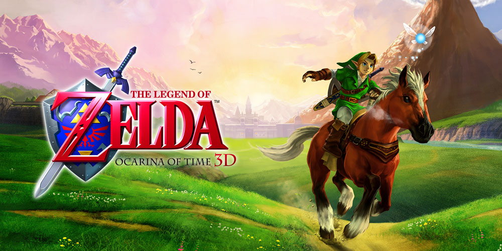
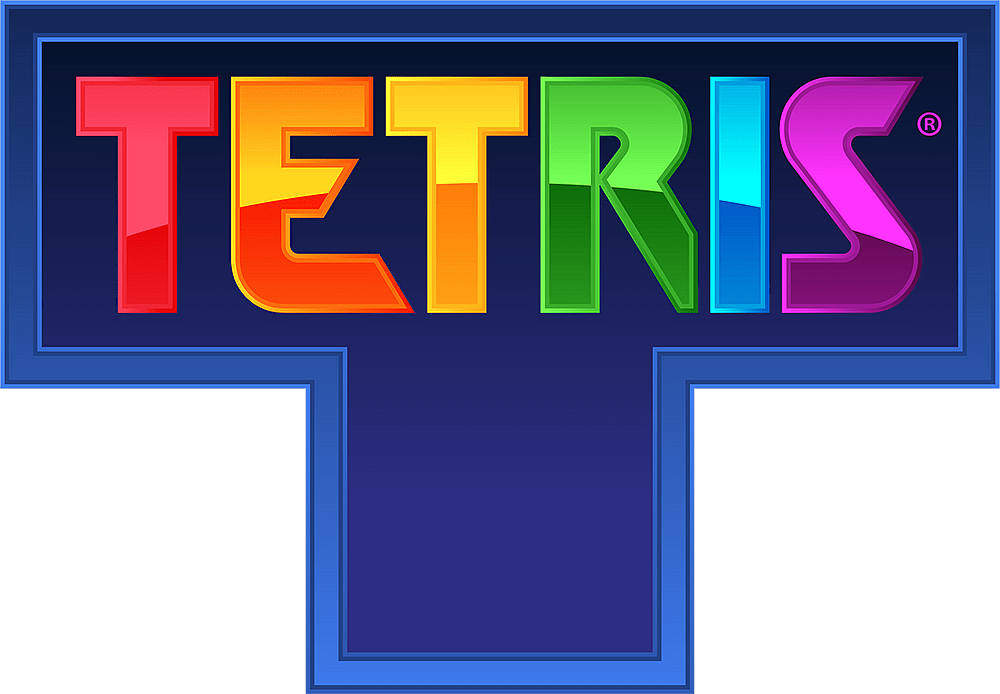
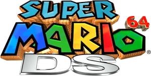
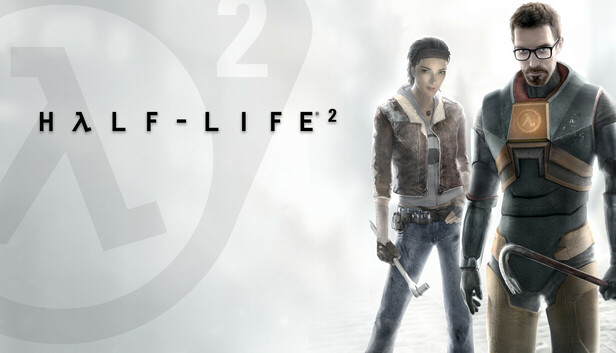
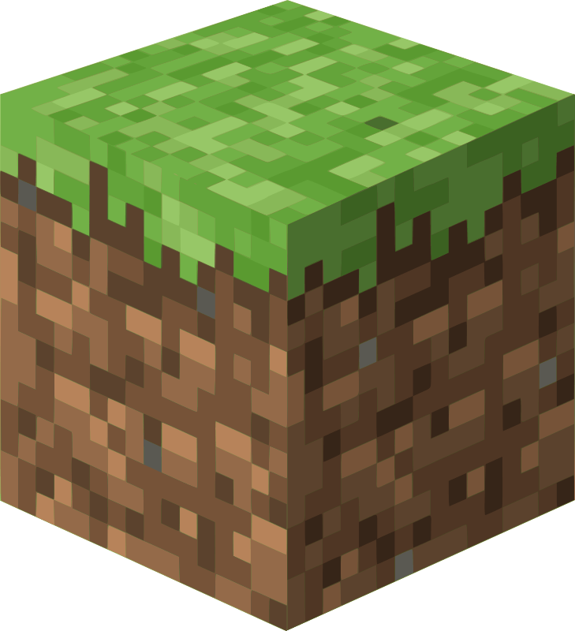
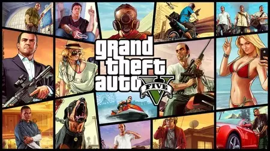
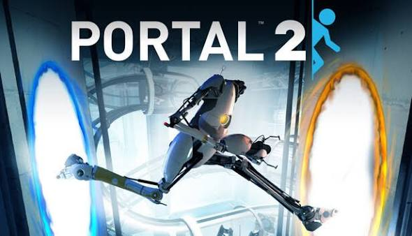
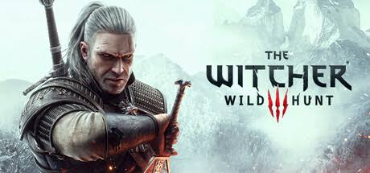
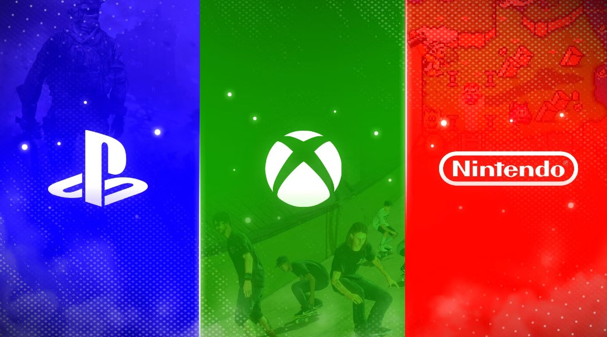

Top 10 mejores videojuegos de la historia
-
1. The Legend of Zelda Ocarina of Time (1998)

© Nintendo. Imagen utilizada bajo uso legítimo con fines informativos. -
2. Tetris (1984)

© Tetris Holding. Imagen utilizada bajo uso legítimo con fines informativos. -
3. Super Mario 64 (1996)

© Nintendo. Imagen utilizada bajo uso legítimo con fines informativos. -
4. Half Life 2 (2004)

© Valve Corporation. Imagen utilizada bajo uso legítimo con fines informativos. -
5. Minecraft (2009)

© Mojang Studios / Microsoft. Imagen utilizada bajo uso legítimo con fines informativos. -
6. Grand Theft Auto V (2013)

© Rockstar Games. Imagen utilizada bajo uso legítimo con fines informativos. -
7. Portal 2 (2011)

© Valve Corporation. Imagen utilizada bajo uso legítimo con fines informativos. -
8. The Witcher 3 (2015)

© CD PROJEKT RED. Imagen utilizada bajo uso legítimo con fines informativos. -
Pac-Man (1980)
© Bandai Namco Entertainment. Imagen utilizada bajo uso legítimo con fines informativos. -
10. Pong (1972)
© Atari. Imagen utilizada bajo uso legítimo con fines informativos.
¿Como se evaluan los videojuegos?
¿Te interesaria ir al museo del videojuego?

La musica como forma de arte en el videojuego
Algunos videojuegos han logrado bandas sonoras tan explendidas que aunque pasen años se siguen recordando
Una de las mejores canciones de Final Fantasy VII (1997)
Se le otorgo un premio a Nier Automata por su increible bada sonora (2017)